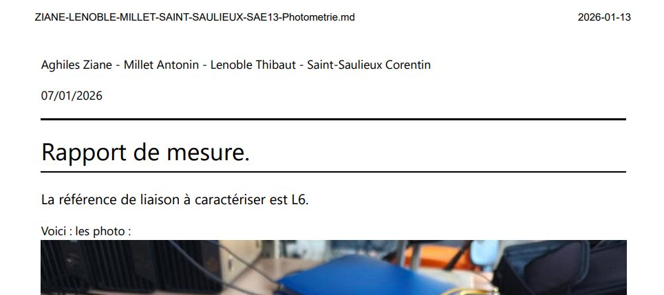
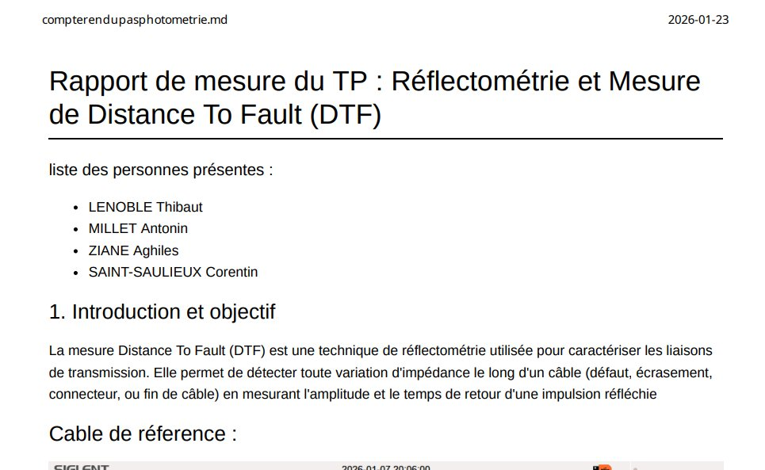

Découvrir un dispositif de transmission
Date : 01/2026
🎯 Contexte et Objectifs
Dans le cadre de ma formation, j'ai réalisé la SAÉ 1.03 portant sur l'étude des supports physiques de transmission : le cuivre et la fibre optique. L'objectif était de comprendre comment qualifier une liaison réseau en mesurant ses caractéristiques physiques. Ce projet consistait à identifier des défauts et des longueurs de câbles (coaxial et Ethernet) ainsi qu'à mesurer l'atténuation d'une liaison fibre optique de type FTTH par photométrie.
🛠 Apprentissages & Réalisations
- AC 12.01 — Mesurer et analyser les signaux.
Cet apprentissage m'apporte la capacité de lire ce qui se passe physiquement « dans le câble » : localiser un défaut, observer une onde, déduire une longueur. C'est la base du diagnostic d'une liaison.
Preuve mobilisée : le compte rendu de réflectométrie / DTF, où je localise un défaut à l'analyseur DTF puis calcule la longueur du câble à l'oscilloscope via la vitesse de propagation (NVP) déterminée sur un câble étalon. - AC 12.03 — Déployer des supports de transmission.
Cet AC m'apporte la maîtrise des deux grands supports — le cuivre et la fibre optique — et le réflexe d'utiliser le bon appareil de mesure pour qualifier chacun, ce qui me prépare aux déploiements FTTH actuels.
Preuve mobilisée : le compte rendu de photométrie sur liaison FTTH (1550 nm), incluant le nettoyage/calibration des connecteurs et l'interprétation des 8,80 dB de perte pour conclure sur la conformité de la liaison. - AC 12.05 — Communiquer avec un tiers (client, collaborateur...) et adapter son discours et sa langue à son interlocuteur.
Cet AC m'apporte la dimension professionnelle de la mesure : un relevé n'a de valeur que s'il est restitué dans un rapport clair et exploitable par autrui.
Preuve mobilisée : les deux comptes rendus eux-mêmes, rédigés en équipe avec protocole, résultats et interprétation, démontrent cette capacité à formaliser et transmettre des résultats techniques.
📂 Preuves et Traces

Mesure d'atténuation par photométrie sur une liaison FTTH (1550 nm) : protocole de mesure, nettoyage et calibration des connecteurs, résultat de 8,80 dB de perte totale.

Localisation de défauts sur câbles cuivre (coaxial et Ethernet) à l'analyseur DTF, puis calcul de longueur à l'oscilloscope via la vitesse de propagation (NVP).
🧠 Analyse Réflexive
| Difficulté rencontrée | Solution / Stratégie | Acquis Professionnel |
|---|---|---|
| Comprendre le fonctionnement de l'analyseur DTF pour trouver un défaut. | Lecture de la documentation technique et observation des démonstrations en TP. (Cf. preuve : Compte rendu Réflectométrie & DTF) | Utilisation d'appareils de mesure spécifiques au réseau (réflectométrie). |
| Interprétation des signaux sur l'oscilloscope en régime impulsionnel. | Comparaison entre les résultats théoriques (formules) et les relevés visuels. | Analyse de signaux électriques et calcul de propagation (NVP). |
Positionnement
Je pense avoir validé le niveau 1 de la compétence car je suis capable de caractériser les principaux supports physiques utilisés en réseaux (cuivre et fibre optique). J'ai appris à utiliser des outils de mesure professionnels comme l'analyseur DTF ou le photomètre pour vérifier la conformité d'une installation. Enfin, je sais désormais interpréter des résultats techniques pour identifier un dysfonctionnement physique sur une liaison.